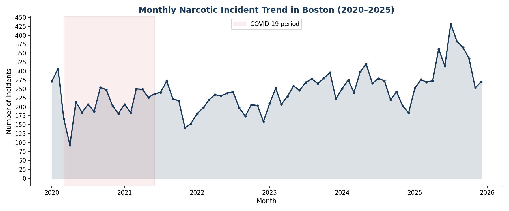
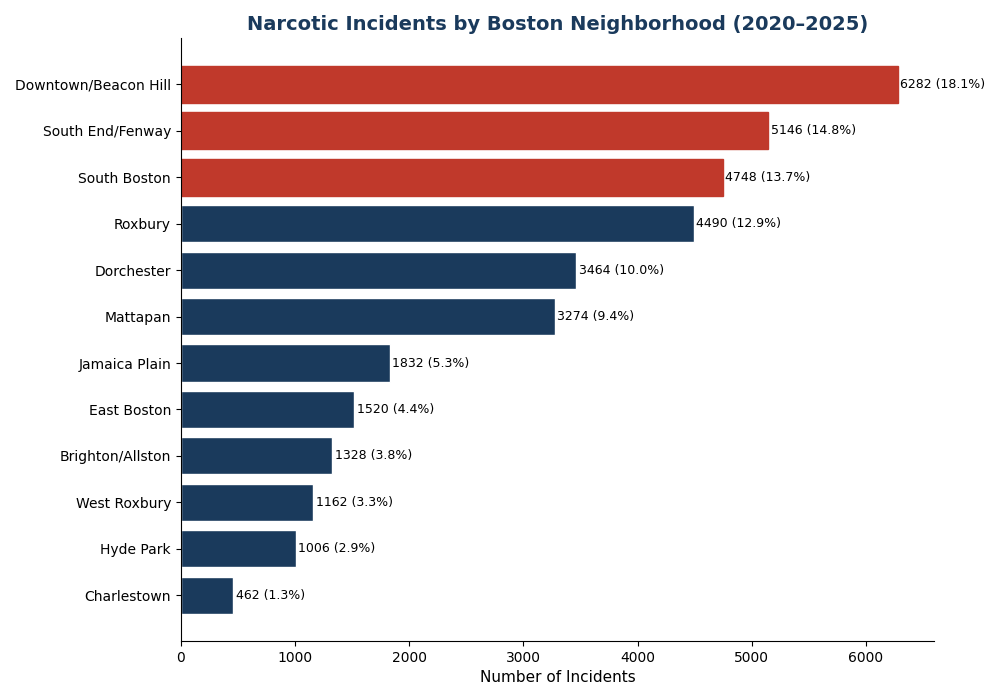

DS4200 Information Presentation & Data Visualization — Northeastern University
Despite numerous public health interventions, the opioid crisis remains one of the most pressing challenges facing urban centers across the United States. In Boston, drug-related incidents have continued to rise year over year. This has become a burden on emergency services, public health infrastructure, and the communities most directly affected. Neighborhoods such as Beacon Hill, Fenway, and South Boston consistently account for a disproportionate share of narcotic-related incidents. This raises questions about the city's harm reduction strategies.
This project analyzes narcotic-related incident data from the Boston Police Department with 311 needle pickup request data to see where the crisis is most concentrated, when incidents peak, and whether city services are helping solve the problem at the neighborhood level. By combining trend analysis, geographic mapping, and a direct comparison of incident volume against city response data, we look to create actionable insights. These insights can lead to understanding where the need for harm reduction resources are most needed.
This project draws on two publicly available datasets from the City of Boston's open data portal (data.boston.gov):
| Dataset | Source | Rows (cleaned) | Columns | Time Span |
|---|---|---|---|---|
| Crime Incident Reports | Boston Police Department | 18,303 | 17 | 2020–2025 |
| 311 Needle Pickup Requests | Boston 311 Service | 46,907 | 20 | 2020–2024 |
The crime incident data was filtered to four drug/narcotic offense types: possession and sale, drug paraphernalia possession, drug-related sick assists, and operating under the influence. Features including neighborhood (mapped from police district codes), season, time of day, and weekend/weekday flags were added during preprocessing. The 311 data was filtered to needle pickup requests and aggregated by neighborhood to allow direct comparison with incident volumes.
Limitations: The crime incident dataset captures only police-reported incidents, meaning unreported drug use and overdoses are not reflected. The 311 needle pickup data represents requests from residents rather than the full city response. Neighborhood boundaries between the two datasets required manual mapping and may not align perfectly in all cases.

Takeaway: Narcotic incidents in Boston have trended upward since a low in mid-2020 (COVID related), when reported incidents dropped to around 90 per month. Since then, monthly counts have climbed steadily, reaching peaks above 350 incidents per month in late 2025. The COVID-19 period (shaded in red) corresponds to a visible dip. This is likely reflecting reduced police reporting and street activity rather than an actual decline in drug use. That is followed by a sustained rebound that has exceeded pre-pandemic levels. The overall trajectory suggests the crisis is intensifying, not stabilizing.

Takeaway: The opioid crisis in Boston is not evenly distributed. Downtown/Beacon Hill leads with over 3,100 incidents, followed by South End/Fenway (2,573) and South Boston (2,374). The top three neighborhoods highlighted in red account for nearly half of all narcotic incidents citywide. Roxbury and Dorchester also account for many incidents. On the other hand, neighborhoods like Charlestown (231) and Hyde Park (503) see far fewer incidents. This distribution shows the need for geographically targeted interventions rather than a citywide approach.
Takeaway: This interactive stacked bar chart breaks down incident counts by year for the top 8 neighborhoods. Click any neighborhood in the legend to isolate its trend. While Downtown/Beacon Hill and South End/Fenway have consistently high counts, some neighborhoods like South Boston and Mattapan show yearly increases. This suggests the crisis is spreading outward. Hover over individual bars for exact counts by neighborhood and year.
Takeaway: This heatmap reveals clear temporal patterns in narcotic incidents. The darkest cells cluster between 3:00 PM and 7:00 PM across all days of the week, with a secondary peak around midday. Late night and early morning hours see the fewest incidents. Drag across any range of hours in the heatmap to see the bar chart update with total incidents for your selection. Weekend patterns are similar to weekdays, suggesting that drug-related activity in Boston follows a consistent daily rhythm which might indicate routine instances.
Takeaway: Narcotic incidents consistently peak in summer and fall across all years, with winter typically seeing the lowest counts. Click any year in the legend to isolate its seasonal curve. Each year's line sits higher than the last, showing the upward trend visible in Figure 1. The seasonal pattern aligns with known patterns in outdoor drug use and street-level activity. This also suggests that warm-weather months should be the priority time for harm reduction resources.
Takeaway: The majority of narcotic incidents involve drug possession, sale, manufacturing, or use. These exceed drug paraphernalia possession, drug-related sick assists, and OUI charges combined. This breakdown suggests that Boston's opioid crisis is primarily a possession and use problem rather than a trafficking or distribution issue. This has implications regarding whether drug criminalization or public health interventions are more appropriate, and makes the case for a harm reduction framework. Other offenses like weapon violations and possession of stolen property are included to emphasize the prevalence of drug-related incidents. Addiction is a disease, and for many, not a choice. Hover over any bar for exact counts.
Takeaway: This interactive choropleth map colors each Boston neighborhood by its narcotic incident density. The darkest shading concentrates in Downtown, South End, and South Boston. This is consistent with the bar chart in Figure 2. Use the year buttons to see how the geographic distribution has shifted over time. While the core hotspots stay the same, other neighborhoods show increasing intensity in more recent years. Hover over any neighborhood to see its name and incident count.
Takeaway: This scatter plot compares each neighborhood's narcotic incident volume (x-axis) against its 311 needle pickup requests (y-axis). The dashed line represents a 1:1 ratio between incidents and city response. Neighborhoods plotted below the line in red have more incidents than needle pickups. This shows a potential gap in city services. Neighborhoods above the line in navy show response keeping pace. Roxbury and South End/Fenway see the most needle pickup requests, while Downtown/Beacon Hill falls below the line, suggesting a service gap in the area most heavily affected. Use the year buttons to filter by year and hover for detailed ratios.
Our analysis of over 18,000 narcotic-related incidents and 46,000 needle pickup requests in Boston from 2020 to 2025 reveals three key findings:
1. The crisis is growing, not stabilizing. Monthly incident counts have risen steadily since a low in 2020, with 2025 recording the highest monthly peaks in the dataset. Seasonal patterns show consistent summer surges, with each year's peak exceeding the last. This trajectory suggests that current interventions are not sufficient to reverse or even stabilize the trend.
2. The burden is geographically concentrated. Downtown/Beacon Hill, South End/Fenway, and South Boston account for a disproportionate share of incidents. The choropleth map confirms these as persistent hotspots, while year-over-year data shows a spread into adjacent neighborhoods like Mattapan and Dorchester. Targeted harm reduction resources to these specific areas would have the greatest impact, and potentially stop the spread to nearby neighborhoods.
3. City response is not keeping pace everywhere. The gap analysis comparing narcotic incidents to 311 needle pickup requests shows that some of the most impacted neighborhoods are underserved relative to their incident volume. While Roxbury and South End show strong community-driven reporting through 311, other high-incident areas don't have proportional response. This suggests an opportunity to reallocate or expand clean needle and harm reduction services.
Future work could incorporate EMS overdose response data, naloxone distribution records, and census-level socioeconomic indicators to build a more comprehensive picture of how Boston's opioid crisis connects with poverty, housing instability, and healthcare access.